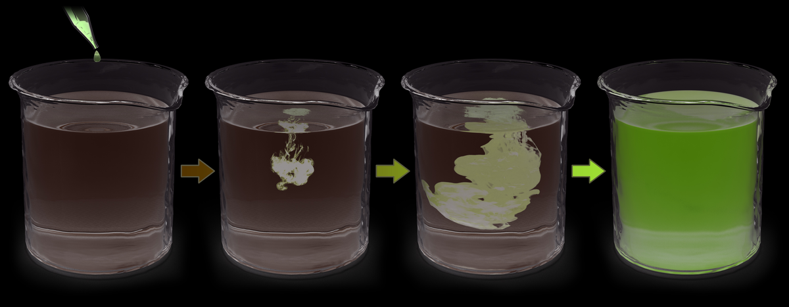
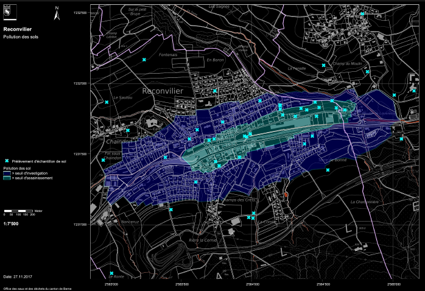
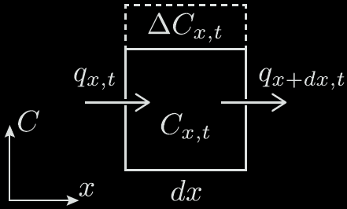
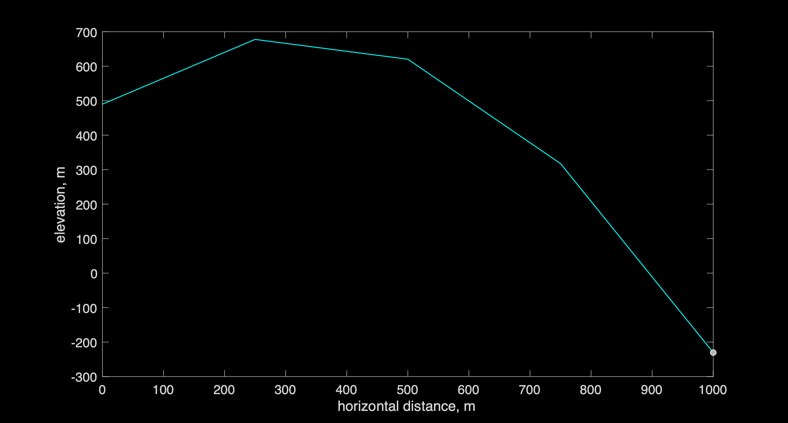

Cours 4#

Objectifs de ce cours#
Introduction au modèle de diffusion en 1D
Illustration par des exemples
Principes physiques de la diffusion
Formulation mathématique
Discrétisation numérique
Implémentation en Python
Stabilité et pas de temps
Exemple 1: Un contaminant se diffuse#

Source : https://youtu.be/6hmqOFITPbs
Exemple 2: Pollution des sols#

Exemple 3: Température dans le sol#
Source 2: https://en.wikipedia.org/wiki/Active_layer Source 1: https://www.energie-environnement.ch/
Introduction à la diffusion#
L’équation de diffusion peut être utilisée pour représenter une grande variété de processus naturels et environnementaux. Elle a été introduite par Fourier en 1822 pour calculer la distribution de la température dans les matériaux, puis, par la suite, elle a été utilisée par Fick pour modéliser la diffusion de la matière. L’expression mathématique que nous allons dériver peut servir à modéliser, p.e. :
le transfert de chaleur dans la croûte terrestre,
l’évolution des sols,
le transport de contaminants dans un aquifère ou dans l’atmosphère,
l’érosion des chaînes de montagnes,
l’évolution des glaciers, etc.
Interprétation graphique#
À partir de l’exemple de la variation de concentration d’un colorant se déplaçant dans un gel, l’équation de diffusion permet de représenter le déplacement de molécules depuis une zone de haute concentration vers une zone de basse concentration, comme l’illustre cette figure (où \(C\) représente la concentration).
Gauche : représentation continue de la diffusion de molécules d’une zone hautement concentrée vers une zone à faible concentration. Droite : représentation du même processus discrétisé en temps et en espace.
Interprétation graphique#
Ici, la diffusion désigne le déplacement de particules d’une zone de haute concentration vers une zone de basse concentration. Le mouvement de particules de gauche à droite est plus marqué lorsque le saut de concentration est élevé, tandis qu’il est faible lorsque la concentration est homogène. Cela entraîne un transfert de particules qui dépend de la différence de concentration \(\Delta C\) de part et d’autre d’une cellule de largeur \(\Delta x\). Ainsi, le flux de particules (le nombre de particules traversant par unité de temps et de surface) dépend du gradient de concentration.
Formalisation mathématique#
Un problème de diffusion peut être décrit par une équation différentielle partielle (EDP). Dans le cas de la diffusion d’un liquide dans un autre, cette EDP modélise l’évolution de la concentration \(C\) en fonction du temps \(t\) et de l’espace \(x\), en tenant compte de la concentration initiale et des conditions aux limites.
Supposons une discrétisation uniforme de l’espace avec un pas \(dx\), et définissons \(C\) comme la concentration d’un polluant donnée par \(C = \frac{n}{dx}\), où \(n\) est le nombre de particules (en mol). Enfin, le flux de particules \(q\) est défini comme le nombre de particules déplacées par unité de temps et de surface \(\left(\frac{\textup{mol}}{\textup{m}^2 \, \text{s}}\right)\).
L’EDP de diffusion repose sur deux principes :
1. Loi de Fick (Fourier dans le cas de la chaleur)#
Comme vu précédemment, le transfert de particules dépend de la différence de concentration \(\Delta C\) de part et d’autre d’une cellule de largeur \(\Delta x\): plus la variation (dérivée) de concentration est grande, plus les particules se déplacent rapidement, ce qui augmente la diffusion. En d’autres termes, le flux de particules dépend du gradient de concentration :
$\( q = -D \frac{\partial C}{\partial x}, \qquad (1) \)\(
où \)D$ est le coefficient de diffusion, ou diffusivité. Ce coefficient varie selon les problèmes et définit la vitesse de transfert des particules (molécules de pollution dans un sol ou particules de sol sur une colline).
2. Principe de conservation#

2. Principe de conservation#
Selon le principe de conservation, le changement du nombre de particules n dans un bloc entre l’instant t et l’instant \(t + \Delta t\) peut être calculé à partir de la différence des flux entrants et sortants : $\(\Delta n = (q_x - q_{x+\Delta x}) \Delta t.\)$
En utilisant la définition de la concentration C = n/dx, l’équation précédente s’écrit : $\( \frac{\Delta C}{\Delta t} = \frac{q_x - q_{x+\Delta x}}{\Delta x}, \)\( qui se transforme en forme continue : \)\(\frac{\partial C}{\partial t} = -\frac{\partial q}{\partial x}, \qquad (2)\)$
Mise en equation de la diffusion#
L’équation de diffusion peut être exprimée comme une dérivée seconde de la concentration \(C\) en combinant
→ Loi de Fick/Fourier $\(q = -D \frac{\partial C}{\partial x}, \qquad (1)\)$
→ Principe de conservation $\(\frac{\partial C}{\partial t} = -\frac{\partial q}{\partial x}, \qquad (2)\)$
ce qui donne l’EDP suivante:
Approximation numérique#
Pour approcher la dérivée en temps, la règle de mise à jour permet de définir l’état futur (à l’instant \(t + dt\)) de notre modèle en ajoutant à l’état actuel au temps \(t\) le taux de changement \(\partial f / \partial t\) fois le pas de temps \(dt\):
Si on a une discrétisation du temps, que l’on connait la concentration au temps précédent, comment la mettre à jour ?
→ 1) mettre à jour le flux en discrétisant : \(q = -D \frac{\partial C}{\partial x},\)
→ 2) mettre à jour dCdt en discrétisant: \(\frac{\partial C}{\partial t} = -\frac{\partial q}{\partial x}\),
→ 3) mettre à jour la concentration.
1) Approximation numérique du flux q#
Discretiser le flux
peut se faire par differences finies:
lequel se code en python ainsi:
q = - D * ( C[1:] - C[:-1] ) / dx
Attention, après cela q a perdu une cellule (taille \(n_x - 1\)), et est défini au centre des cellules (contrairement à C, qui a une taille de \(n_x\)).
2) Approximation numérique de dCdt#
Discretiser dCdt
se fait aussi par differences finies:
lequel se code en python ainsi:
dCdt = - ( q[1:] - q[:-1] ) / dx
Une fois encore, on pert une cellule, de sorte que dCdt a une taille \(n_x - 2\). On revient donc aus noeuds où \(C\) est défini.
3) Règle de mise à jour#
Enfin, la dernière étape consiste à mettre à jour la concentration \(C\) en discrétisant par difference finies:
ce qui donne
lequel se code en python :
C[1:-1] += dCdt * dt
Dérivées et taille de vecteurs#
La mise à jour de la concentration \(C\) par diffusion est le résultat de deux dérivées successives. A chaque dérivée, on perd une cellule. Pour \(n_x\) cellules, il y aura \(n - 1\) flux entre elles, et \(nx - 2\) valeurs pour dCdt.
Vecteur Taille
C |-----|-----|-----|-----|-----|-----|-----| nx
C[1:] |-----|-----|-----|-----|-----|-----|
C[:-1] |-----|-----|-----|-----|-----|-----|
q = -D*(C[1:]-C[:-1])/dx |-----|-----|-----|-----|-----|-----| nx-1
dCdt = -(q[1:]-q[:-1])/ dx |-----|-----|-----|-----|-----| nx-2
C[1:-1] += dCdt * dt |-----|-----|-----|-----|-----| nx-2
Attention: Il faut aire des opérations sur des vecteurs de tailles consistantes!


Conditions de bord#
La règle de mise à jour
C[1:-1] += dCdt * dt
n’agit pas sur les valeurs de C aux extrémités (c’est-à-dire C[0] et C[-1]).
Si l’on ne fait rien, les valeurs de bord de C ne sont donc pas mises à jour et restent à leur état initial.
Dans ce cours, nous n’irons pas plus loin. Toutefois, nous verrons dans le cours suivant qu’il y a plusieurs options pour mettre à jour les valeurs au bord selon les conditions physiques du problème. C’est ce qu’on appelle les conditions de bord.
Pas de temps \(dt\) et stabilité#
La stabilité et la précision d’un modèle numérique dépendent de son pas de temps \(dt\), lequel doit être suffisamment petit, comme le montre la figure suivante.

Dans le cas d’un problème de diffusion, le pas de temps suivant assure la stabilité:
Utilisation d’un flag#
Il peut être utile de détecter quand une condition est remplie pour la première fois, par exemple, pour trouver à quel moment une température au milieu du domaine passe pour la première fois au-dessus de zéro:
[]...]
flag_firstime = True
for it in range(nt):
ix = int(nt/2)
if (T[ix] > 0)&(flag_firstime):
temps_passage_seuil = it * nt
flag_firstime = False
[]...]
Sans la variable “flag”, la variable temps_passage_seuil serait réécrite (car la condition est satisfaite), et l’on perdrait l’information de quand cette condition a été réalisée la première fois. Alternativement, on aurait pu utiliser un break.